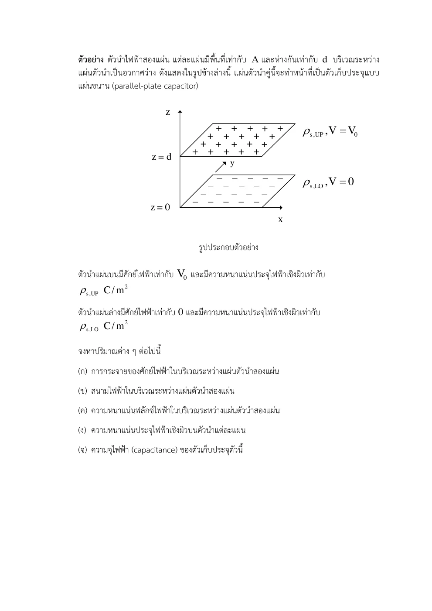
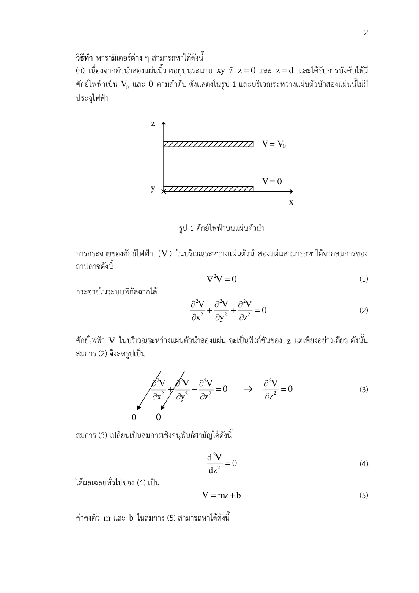
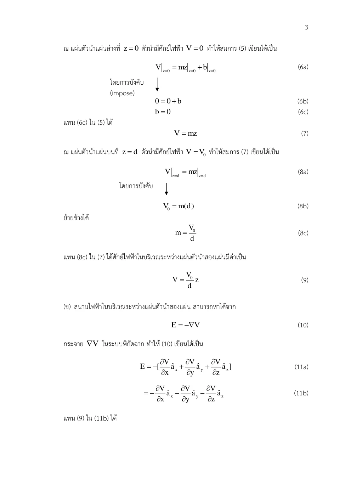
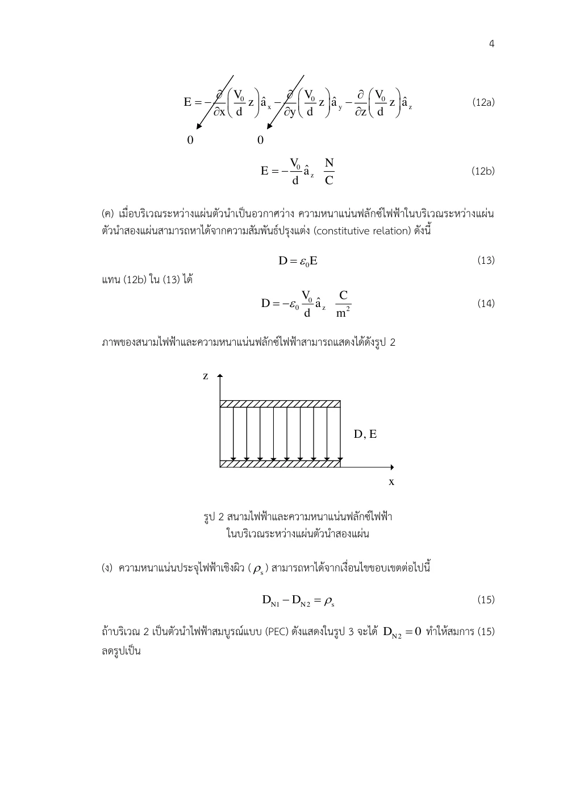
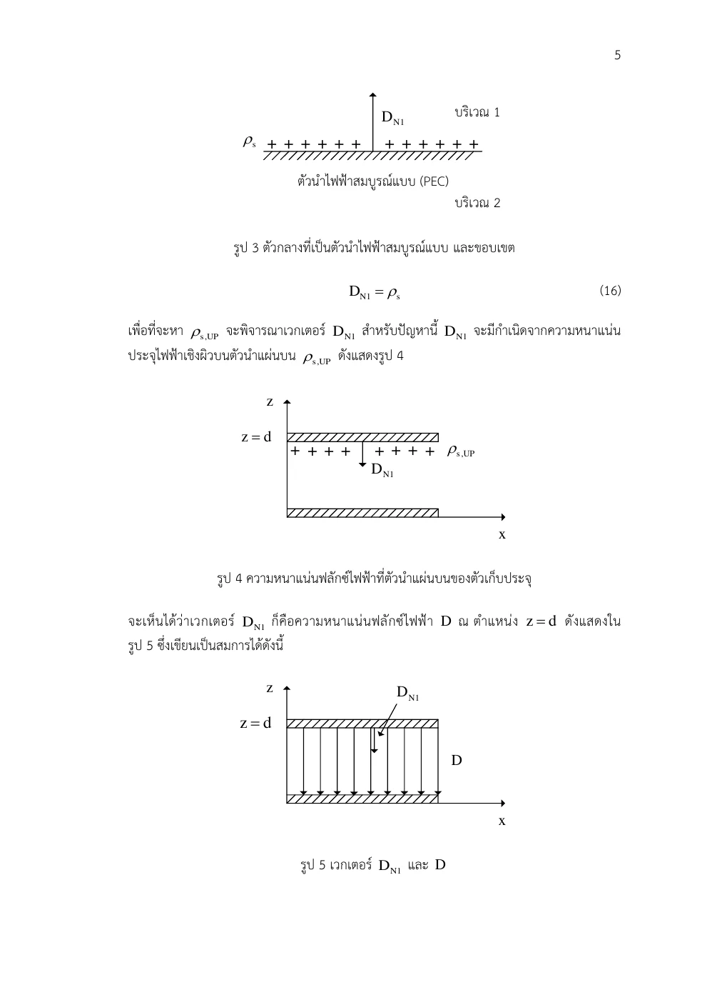
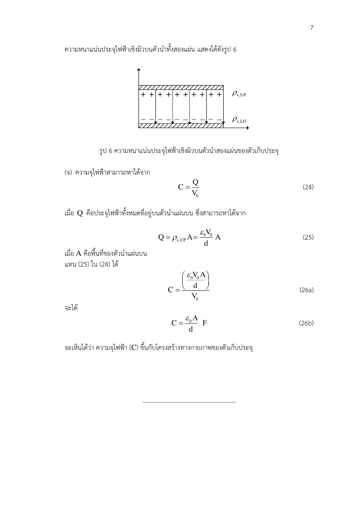

01 สูตรสนามตั้งต้น
∇ • D=ρv; D=εE; E=−∇V
เหตุใดจึงแปลงรูปเช่นนี้? สามสมการเชื่อมแหล่ง วัสดุ และศักย์ ใช้ไฟฟ้าสถิตก่อนลดเป็น PDE
Poisson & Laplace · Hayt §6.6–6.7 D6.5; Sadiku §6.2–6.3
ถ้ารู้แรงดันบนตัวนำแต่ไม่รู้ประจุบนผิว จะหาสนามภายในช่องว่างอย่างไร?
สนามเกิดจากประจุและศักย์ถูกกำหนดโดยตัวนำที่ขอบ ถ้าไม่มีประจุในช่องว่าง ไม่ได้แปลว่าสนามศูนย์ แต่หมายถึงความโค้งของศักย์ตามสมการลาปลาสเป็นศูนย์ เงื่อนไขขอบยังสร้างความชันและสนามได้
ระหว่างแผ่นกว้างสองแผ่น ศักย์เปลี่ยนตาม z เพียงแนวเดียว ลาปลาสจึงบอกว่าเส้นศักย์เป็นเส้นตรง ถ้ามีประจุปริมาตรคงที่ เส้นนี้จะโค้งเป็นพาราโบลา การดูความโค้งจึงช่วยอ่านตำแหน่งแหล่ง
ขอบเขตแบบจำลอง: ไฟฟ้าสถิต ε คงที่ ช่องว่างไร้ประจุ แผ่นกว้างละเลยขอบ
เหตุใดจึงแปลงรูปเช่นนี้? สามสมการเชื่อมแหล่ง วัสดุ และศักย์ ใช้ไฟฟ้าสถิตก่อนลดเป็น PDE
เหตุใดจึงแปลงรูปเช่นนี้? ถ้า ε เปลี่ยนตามตำแหน่ง ต้องเก็บมันไว้ใน divergence ห้ามดึงออกโดยอัตโนมัติ
เหตุใดจึงแปลงรูปเช่นนี้? ปัวซงกับลาปลาสต่างที่แหล่งประจุปริมาตร ไม่ใช่มีหรือไม่มีแรงดัน
เหตุใดจึงแปลงรูปเช่นนี้? แผ่นกว้างและศักย์เท่ากันตาม x,y ทำให้เหลือสมการหนึ่งมิติ
เหตุใดจึงแปลงรูปเช่นนี้? อนุพันธ์ความชันเป็นศูนย์จึงความชันคงที่ เก็บค่าคงตัวแรก
เหตุใดจึงแปลงรูปเช่นนี้? สมการอันดับสองมีค่าคงตัวสองตัว ต้องมีเงื่อนไขสองแห่งจึงกำหนดครบ
เหตุใดจึงแปลงรูปเช่นนี้? แทนค่าศักย์ที่ผิวตัวนำ ไม่ใช้ขอบที่เดาเพิ่ม หากสลับศักย์แผ่น สนามจะกลับทิศ
เหตุใดจึงแปลงรูปเช่นนี้? ปกติออกจากแผ่นบนเข้าสู่ช่องว่างคือ −z แผ่นล่างคือ +z จึงประจุบนบวกแม้ Ez ลบ
เหตุใดจึงแปลงรูปเช่นนี้? ผลต้องผ่านทั้ง PDE และค่าขอบ ไม่ใช่แค่มีรูปเส้นตรง ความจุคืนผลบทก่อน
เขียนสูตรทั่วไป → ระบุพิกัดและทิศ → วิเคราะห์ด้วยมือ → ใช้ขอบเขต → ตรวจหน่วย SI และความหมาย
การออกแบบอิเล็กโทรดแรงสูงเริ่มจากศักย์ขอบและคำนวณสนามในฉนวน จากนั้นตรวจตำแหน่งที่ |∇V| สูงซึ่งเสี่ยงต่อความเค้นฉนวน
แบบจำลองหนึ่งมิติช่วยตั้งความคาดหมายก่อนใช้วิธีคำนวณสนามสองหรือสามมิติ ในบทนี้ใช้ขอบแผ่นขนานตาม Set 14 ไม่เพิ่ม Uniqueness Theorem ที่คำชี้แจงระบุว่าไม่ได้สอน
ลองอธิบายด้วยคำของตนเอง: ถ้าแผ่นทั้งสองมีศักย์เท่ากัน ในแบบจำลองนี้ V กับ E เป็นอย่างไร?
ปรับแรงดันแผ่นบนแล้วดูกราฟ V(z) กับลูกศร E คงที่ ทำนายว่าความชันเพิ่มเท่าใดก่อนเลื่อนค่า
ก่อนปรับ: ทำนายทิศและขนาด · หลังปรับ: อธิบายด้วยสมการและเงื่อนไข
นำสนามและเฟสไปต่อยอดสู่สายส่ง เสาอากาศ และการถ่ายโอนพลังงาน
เลขหน้าทั้งหมดนับหน้า PDF รวมปก ตำราเป็นแหล่งตรวจวิธีและนิยาม ไม่ได้กล่าวว่าข้อมูลทุกตัวอย่างตรงกับข้อสอบ บทอธิบายและการพิสูจน์ด้านบนเรียบเรียงเพื่อการสอน
เริ่มจากกฎเกาส์ D = εE และ E = −∇V เมื่อ ε คงที่จึงได้สมการปัวซง บริเวณไม่มีประจุเชิงปริมาตรลดเป็นลาปลาส เงื่อนไขศักย์ที่ขอบเขตใช้กำหนดค่าคงตัวหลังอินทิเกรต
อ่าน สไลด์หลัก · หน้า PDF 1 ควบคู่กับคำอธิบายด้านล่าง เพื่อเทียบรูปและลำดับสมการ
ห้ามแทนลาปลาเซียนทรงกระบอกด้วยอนุพันธ์อันดับสองอย่างเดียว ต้องเก็บตัวคูณ ρ และ r² เงื่อนไขสองขอบต้องใช้ครบ ไม่รวม Uniqueness Theorem ตามคำชี้แจงสอบ
ถ้า ε แปรตามตำแหน่งต้องเก็บ ∇•(ε∇V) สมมาตรหนึ่งมิติให้คำตอบลาปลาสเป็น az+b ในฉาก, a ln ρ+b ในทรงกระบอก และ a/r+b ในทรงกลม ซึ่งต้องได้จากการอินทิเกรตตัวดำเนินการพิกัดนั้น
ใช้ค่าศักย์สองผิวกำหนด a,b ก่อนหา E,D,ประจุผิว และ C
| สัญลักษณ์ | ความหมาย / คำอ่าน | SI |
|---|---|---|
| V | ศักย์ไฟฟ้า | V |
| ρv | ความหนาแน่นประจุเชิงปริมาตร | C/m³ |
| ε | สภาพยอมคงที่ในบริเวณ | F/m |
| ∇2V | ลาปลาเซียนของศักย์ | V/m² |
แสดง 8 หน้า
แต่ละรายการเรียบเรียงภาษาไทย พร้อมภาพต้นฉบับหน้าเดียวกัน ภาพคงรูปเวกเตอร์และลำดับการพิสูจน์ของอาจารย์ เปิดเฉพาะหน้าที่ต้องการอ่าน
| สัญลักษณ์ | คำอ่านและความหมาย | SI |
|---|---|---|
| x,y,z; r,ρ; θ,ϕ | เอ็กซ์ วาย แซด; อาร์ โร; ทีตา ไฟ · พิกัดและมุม | m; m; rad |
| E, D; H, B | อี ดี; เอช บี · สนามและฟลักซ์ไฟฟ้า/แม่เหล็ก | V/m, C/m²; A/m, T |
| J, K; ρv, ρs | เจ เค; โรซับวี โรซับเอส · กระแสปริมาตร/ผิวและประจุปริมาตร/ผิว | A/m², A/m; C/m³, C/m² |
| ε, μ, σ; εr, μr | เอปไซลอน มิว ซิกมา · สภาพยอม ความซาบซึมได้ สภาพนำ; ค่าสัมพัทธ์ | F/m, H/m, S/m; ไม่มีหน่วย |
| P, χe | พี ไคซับอี · โพลาไรเซชันและความไวทางไฟฟ้า | C/m², ไม่มีหน่วย |
| I, Q, q; V, V0 | ไอ คิว คิว; วี วีซับศูนย์ · กระแส ประจุรวม/ย่อย ศักย์/แรงดันกำหนด | A, C, C; V, V |
| C, W; S, A; d,L | ซี ดับเบิลยู; เอส เอ; ดี แอล · ความจุ พลังงาน พื้นที่ ระยะห่าง ความยาว | F, J; m², m²; m,m |
| A, Φ | เอ ไฟตัวใหญ่ · ศักย์เวกเตอร์แม่เหล็กและฟลักซ์ | Wb/m, Wb |
| ω, f, λ; k, η | โอเมกา เอฟ แลมบ์ดา; เค อีตา · ความถี่เชิงมุม ความถี่ ความยาวคลื่น เลขคลื่น อิมพีแดนซ์ | rad/s, Hz, m; rad/m, Ω |
| v, t; dl, ds, dv | วี ที; ดีแอล ดีเอส ดีวี · ความเร็ว เวลา ส่วนย่อยความยาว ผิว ปริมาตร | m/s, s; m,m²,m³ |
| an, j; ∇, ∇2 | เอซับเอ็น เจ; เดล ลาปลาเซียน · เวกเตอร์หน่วย หน่วยจินตภาพ ตัวดำเนินการพื้นที่ | ไม่มีหน่วย; ต่อระยะทางและระยะทาง² |
| Es, Hs | อีซับเอส เอชซับเอส · เฟสเซอร์เชิงอวกาศ | V/m, A/m |
องค์ประกอบสนามมีหน่วยเดียวกับสนาม ตัวห้อย t,n คือสัมผัสและปกติ ตัวห้อย 1,2 คือตัวกลาง ไพรม์ระบุแหล่งกำเนิด a ที่เป็นค่าคงตัวจากการอินทิเกรตมีหน่วยตามสมการที่ใช้; a ที่เป็นเวกเตอร์หน่วยไม่มีหน่วย
ตัวนำที่ z = 0 มีศักย์ศูนย์ ตัวนำที่ z = d มีศักย์ V0 > 0 พื้นที่แต่ละแผ่น S ช่องว่างเป็นอวกาศว่าง ε=ε₀ (ใช้ S แทนพื้นที่ A ของต้นฉบับ)และไม่มีประจุปริมาตร ละเลยสนามขอบ จงหา V(z), E, D, ประจุผิวสองแผ่น และ C
ALL-Q03 · ลาปลาสแผ่นขนาน · เรียบเรียงจากไฟล์จริง · Set 14 เฉลยครบ · หน้า PDF 1 · ชุดโจทย์เดิม · หน้า PDF 7 · Hayt ตัวอย่างแผ่นขนาน · หน้า PDF 177 · Sadiku วิธีลาปลาสสำหรับแผ่นขนาน · หน้า PDF 248
ทำไมจึงทำขั้นนี้? สามสมการเชื่อมแหล่ง วัสดุ และศักย์ ใช้ไฟฟ้าสถิตก่อนลดเป็น PDE
ทำไมจึงทำขั้นนี้? ถ้า ε เปลี่ยนตามตำแหน่ง ต้องเก็บมันไว้ใน divergence ห้ามดึงออกโดยอัตโนมัติ
ทำไมจึงทำขั้นนี้? ปัวซงกับลาปลาสต่างที่แหล่งประจุปริมาตร ไม่ใช่มีหรือไม่มีแรงดัน
ทำไมจึงทำขั้นนี้? แผ่นกว้างและศักย์เท่ากันตาม x,y ทำให้เหลือสมการหนึ่งมิติ
ทำไมจึงทำขั้นนี้? อนุพันธ์ความชันเป็นศูนย์จึงความชันคงที่ เก็บค่าคงตัวแรก
ทำไมจึงทำขั้นนี้? สมการอันดับสองมีค่าคงตัวสองตัว ต้องมีเงื่อนไขสองแห่งจึงกำหนดครบ
ทำไมจึงทำขั้นนี้? แทนค่าศักย์ที่ผิวตัวนำ ไม่ใช้ขอบที่เดาเพิ่ม หากสลับศักย์แผ่น สนามจะกลับทิศ
ทำไมจึงทำขั้นนี้? ปกติออกจากแผ่นบนเข้าสู่ช่องว่างคือ −z แผ่นล่างคือ +z จึงประจุบนบวกแม้ Ez ลบ
หน่วย εS/d เป็น F/m × m²/m = F; สนามชี้จากศักย์สูงลงสู่ศักย์ต่ำ
ทำไมจึงทำขั้นนี้? รวมความหนาแน่นผิวให้ Q ก่อนใช้ C=Q/ΔV
ทำไมจึงทำขั้นนี้? การพิสูจน์ใช้ ε ทั่วไปเพื่อให้เห็นบทบาทวัสดุ แต่คำตอบของ ALL-Q03 ต้องแทน ε₀ เพราะช่องว่างในไฟล์จริงเป็นอวกาศว่าง
ในอวกาศว่างให้ V = 5ρ2 cos 2ϕ V จงหา V และ ρv ที่ P(3,π/3,2)
Drill ตำรา: คงค่าตามต้นฉบับ · Hayt D6.5(b) · หน้า PDF 176 · Set 14 · สูตรพื้นฐานที่เกี่ยวข้อง · หน้า PDF 3
ทำไมจึงทำขั้นนี้? เลือกปัวซงพิกัดทรงกระบอกให้ตรงตัวแปรของศักย์
ทำไมจึงทำขั้นนี้? อนุพันธ์รัศมีต้องคูณ ρ ก่อนดิฟแล้วหาร ρ ตามตัวประกอบสเกล
ทำไมจึงทำขั้นนี้? อนุพันธ์มุมอันดับสองมีตัวประกอบหนึ่งส่วน ρ² จึงหักล้างพจน์รัศมี
ศักย์ไม่เป็นศูนย์แม้ประจุเชิงปริมาตรเป็นศูนย์ คำตอบตรงกับตำรา
ทำไมจึงทำขั้นนี้? ศักย์ไม่ศูนย์ในบริเวณไร้ประจุได้ ตรวจค่าจุดหลังหา Laplacian
เลื่อนพารามิเตอร์เพื่อดูแนวโน้มและเครื่องหมาย แล้วกลับไปพิสูจน์ด้วยสูตรตั้งต้นในตัวอย่าง
ตัวอย่างเพิ่มเติม โน้ต และภาพลายมือแสดงเป็นหน้าต้นฉบับเรียงลำดับ ใช้คำอธิบายและวิธีทำในบทนี้ประกอบ
ระบุศักย์ทั้งสองแผ่นและพารามิเตอร์ที่ต้องหา

ลดลาปลาสเป็น d²V/dz² = 0 อินทิเกรตสองครั้งได้ V = az+b

ใช้ V(0)=0 และ V(d)=V0 กำหนดค่าคงตัวทั้งสอง

เขียนเกรเดียนต์ทั่วไปแล้วได้ E = −V0 az/d และ D = εE

ใช้ปกติออกจากตัวนำแต่ละแผ่นซึ่งมีทิศสวนกัน

รวมประจุบนพื้นที่ก่อนหาร V0 จึงได้ C = ε0S/d
